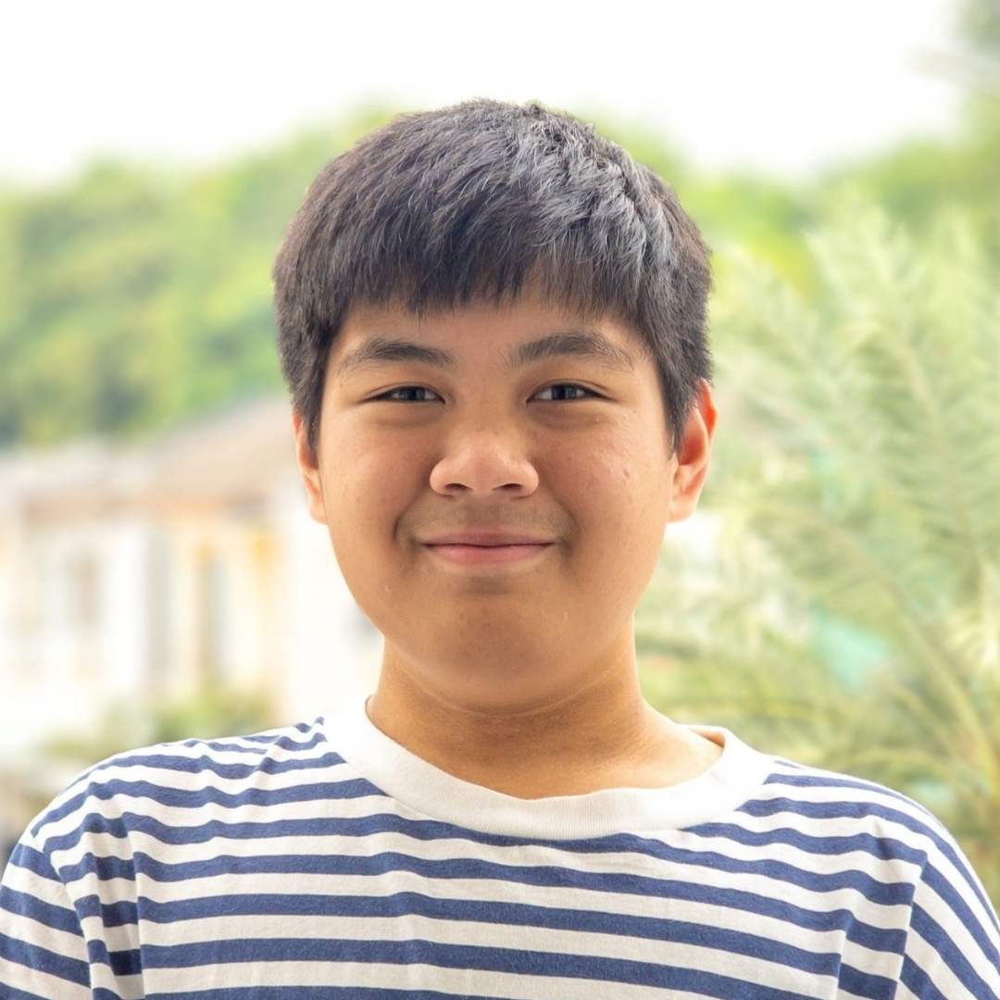

 

Hai, saya Biyo!


Halo!
Nama saya Sabiyo Riezky Pratama, atau biasa dipanggil Biyo. Saya siswa kelas 8R di SMP Al-Fath BSD dan saat ini saya bertugas sebagai koordinator divisi media OSIS.
Saya sangat menyukai teknologi dan pemrograman, khususnya dalam pengembangan web. Selain itu, saya juga sangat menyukai membuat projek elektronik sederhana menggunakan Arduino, ESP32, atau Raspberry Pi.
Saya juga memiliki hobi 3D printing FDM, biasanya untuk membuat casing projek elektronik saya dan untuk mendekorasi rumah saya. Saya mendesain modelnya menggunakan software CAD seperti Autodesk Fusion atau Onshape.
Saya juga tertarik pada desain grafis, dan suka mencoba membuat desain yang menarik dan rapi. Kebanyakan desain saya terinspirasi dari desain Apple yang ramah pengguna tapi juga indah untuk dilihat.

Permainan kuis benar atau salah yang saya buat dengan Arduino Uno untuk mading sekolah, dalam rangka memperingati Hari Kemerdekaan RI ke-79.

Saya bersama kelompok saya membuat sistem rekapitulasi suara sederhana untuk Pemilu OSIS SMP Al-Fath BSD periode 2024/2025, menggunakan ESP32 serta antarmuka berbasis HTML, CSS, dan JavaScript.

Saya telah memotret lebih dari 326.000 gambar jalanan dengan cakupan lebih dari 2.000 kilometer jalanan di Mapillary melalui akun bernama FotoPeta.
Email saya di: